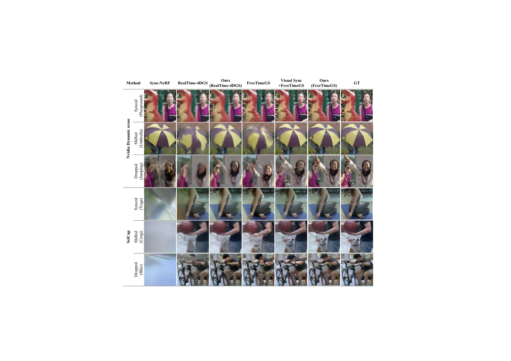
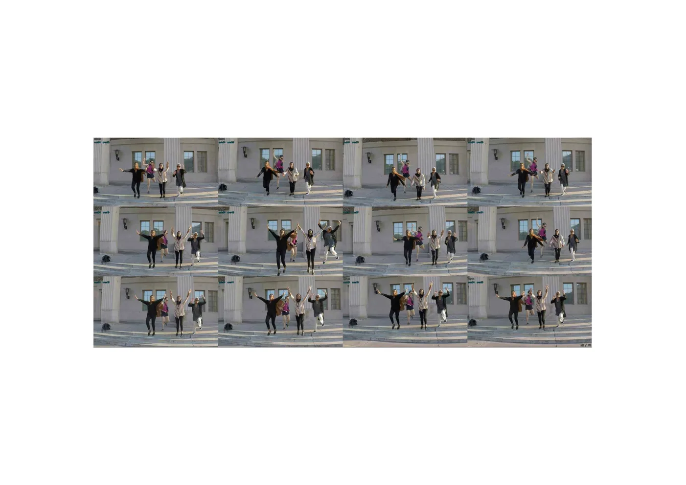
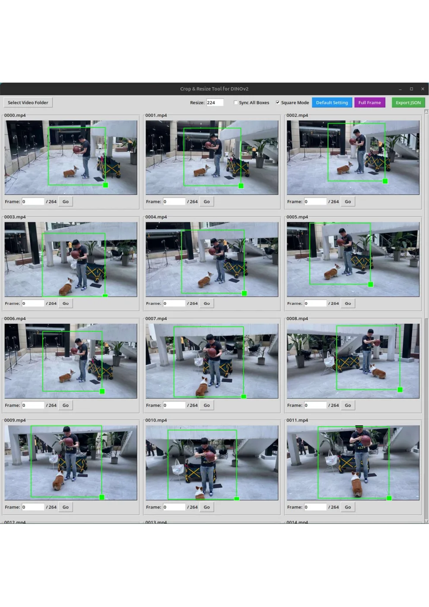
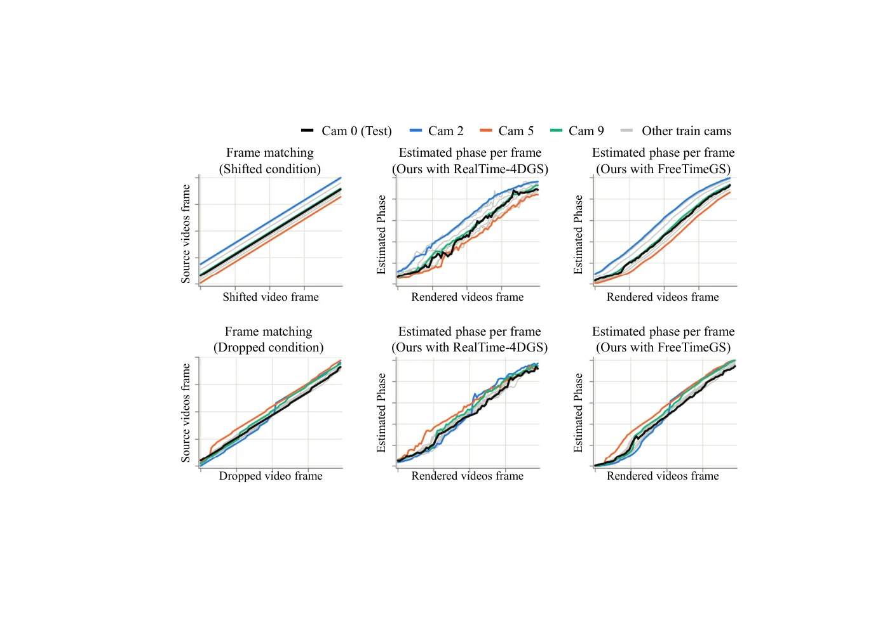
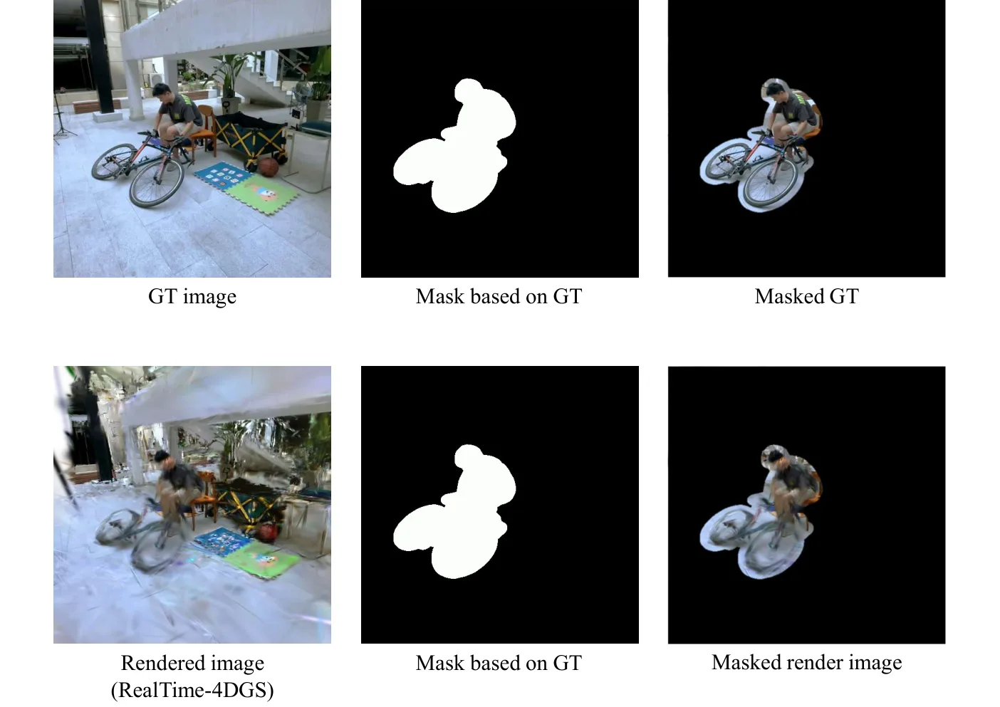

Phase-DGS：用内容相位替代时间戳的不同步多视角 4D 高斯重建
Phase-DGS: Phase-guided Dynamic Gaussian Splatting from Unsynchronized Multi-view Video
把“同步”从硬件问题改写成内容对齐问题：DINOv2 特征加 MLP 预测每帧相位，替换 4DGS 的时间戳；SelfCap 丢帧条件下 FreeTimeGS 主干从 27.894 dB 升到 34.379 dB，训练显存 +30.5%、迭代速度慢 2.11 倍，渲染端零额外开销。
PSNR gain
PSNR under shift
training slowdown
run-to-run std
作者、单位与技术谱系 · Research context
作者与单位
研究脉络
- FreeTimeGS（Wang et al., CVPR 2025）方法基座关系：本文默认主干：用自由高斯基元在任意时刻表达动态场景，Phase-DGS 只把它输入的时间戳换成相位。[论文 §3.5 与 Table 1]
- RealTime-4DGS（Wu et al., CVPR 2024）第二主干 / 对照关系：隐式变形场主干，用来验证相位接口的即插即用性；作者发现它对时间戳误差本来就更鲁棒，因此相位带来的增益较小。[论文 §4.1 与 §4.3]
- Sync-NeRF（Kim et al., AAAI 2024）问题上游关系：把每相机的时间偏移作为可学习参数与辐射场联合优化；本文指出它只支持子帧实值偏移，无法处理丢帧与冻结。[论文 §2 与 Table 1]
- DINOv2（Oquab et al., 2023）与多视频同步的原型学习（Naaman et al., ICCV 2025）组件来源关系：前者提供冻结的通用视觉特征，后者启发“用可学习原型对齐多段视频”的特征库设计。[论文 §3.2–§3.3]
合作网络
- ETRI 与首尔国立大学的共同署名ETRI（大田） → 首尔国立大学关系：共同署名[arXiv HTML 作者署名块]
- Phase-DGS 对 FreeTimeGS 与 RealTime-4DGS 的技术依赖Phase-DGS（ETRI/SNU） → FreeTimeGS / RealTime-4DGS 主干关系：技术依赖（主干与基线）[论文 §3.5、§4.1]
- 与 VisualSync 的同期对照关系Phase-DGS → VisualSync（Liu et al., 2025）关系：实验对照（同步预处理路线）[论文 §4.2–§4.3]
作者、单位、邮箱与资助信息来自 arXiv HTML 首页与致谢，属原文事实；主干与基线的技术接续来自论文正文的引用与消融，属有来源的解读；论文没有公开个人主页或代码仓库链接，因此不推断导师、师生或实验室隶属关系。
方法本质拆解 · What actually changed
是不是微调？
是端到端训练，但从冻结的 DINOv2 开始：ViT 编码器全程不更新，只训练相位投影器（三层 MLP）、可学习特征库与 4DGS 主干，在目标场景上按 50 万次（FreeTimeGS）或 6 万次（RealTime-4DGS）迭代联合优化，没有跨数据集预训练阶段。也就是说每个场景仍要重新拟合一次辐射场，只是时间坐标换成了学出来的相位。
有没有额外约束？
有两条显式约束作用在相位上：相位一致性把当前帧特征拉向特征库中同相位的检索结果，迫使跨相机同状态帧对齐；单调约束要求每条相机序列的相位沿时间轴递增且步长不小于 1/(F·k)，排除乱序解。此外还有隐含假设：场景刚体运动为主、每帧只有一个全局相位（多物体共享）、相机内参已知且位姿由 COLMAP 类方法先给出。
推理/后端到底做了什么？
推理端几乎什么都没加：训练完的 4DGS 主干照常在给定相位处渲染，ViT、投影器与特征库都不参与，所以渲染耗时与基线一致。仅在评测时，为了把测试帧对上训练相位，会在参考相位 ±0.05 的窗口内搜索一次最优相位（主干冻结），作者用 W=0 的对照说明这一步只补偿参考噪声、不是增益来源。
方法本质是什么？
本质是把“时间”这个不可靠的外生变量，替换成“运动进程”这个可从图像观测的内生变量，并用特征库把不同相机的同一进程状态绑在一起。它改变的是跨相机观测在时间轴上的对应关系（而不是相机位姿或场景几何），靠单调约束保证序、靠一致性约束保证跨视角同相位、靠渲染损失保证相位对重建有用；没有做的是绝对时间恢复、多相机联合位姿优化与真实硬件时钟漂移建模。
输入多视角 RGB 与已知位姿 → 用冻结 DINOv2 加特征库为每帧回归 [0,1] 相位，替换 4DGS 的时间戳 → 渲染、相位一致性与单调三项损失联合优化 → 不同步采集下仍能得到时空一致的重建。

结论与问题Conclusion & Motivation
核心结论
Phase-DGS 把 4D 高斯训练的时间坐标从采集时间戳换成由图像内容推断的相位：冻结的 DINOv2 特征经三层 MLP 输出一个 [0,1] 标量，直接替换主干里的 t，因此“同一运动状态”在不同相机、不同时刻拍到的帧会落到同一相位上，跨相机对应关系不再依赖硬件触发。在 FreeTimeGS 主干上，SelfCap 的丢帧条件从 27.894 dB 提到 34.379 dB（+6.49 dB），偏移条件从 27.170 提到 32.947 dB；在 RealTime-4DGS 主干上同期从 26.679 提到 29.638 dB，说明增益不是某一个主干的偶然现象。代价明确：训练显存多 514 MB（+30.5%），吞吐从 148 降到 70 it/s（2.11 倍变慢），而推理渲染不用相位投影器，开销不变。它不改善完全同步时的重建：Nvidia 数据集 Synced 条件下 30.416 dB 比 FreeTimeGS 的 31.167 dB 低 0.75 dB，作者把这一点解释为“方法的目标是鲁棒性而非同步下的峰值质量”，这个取舍需要在选型时显式记账。
动机与问题
动态多视角重建的现有流程都把“逐帧同步”当作输入前提，而工业级同步要么依赖 Genlock 这类主时钟触发、布线与成本高且信号会衰减，要么依赖 PTP/NTP，受带宽与丢包影响会出现漂移。数据驱动的替代方案各有硬假设：音频对齐要求可控声学环境，几何/特征匹配在弱纹理与大视角差下退化，人体姿态跟踪要求画面里始终有人，而 Sync-NeRF 这类联合优化方法通常只给每个相机一个偏移量，无法表达丢帧与冻结这种逐帧、逐相机独立发生的事件。更麻烦的是，不同步会让相机位姿估计本身变难，而上述重建耦合方法又大多假设位姿已知。论文要回答的问题是：能否不估计绝对时间偏移，而是给每帧一个与内容绑定的相对量，让 4DGS 在这个量上优化？
方法Method
方法总览
方法由三块组成。相位提取模块先把图像粗裁到运动集中的 ROI，缩放到 ViT 输入尺寸，用 dinov2_vitb14 编码后对所有 patch token 取平均得到全局特征，再经 d→256→128→64→1 的 MLP 与 Sigmoid 输出相位。特征库是一个形状为相机数 ×（帧数 × 上采样因子 k）× 特征维度的可学习张量，它给“同一运动状态”提供跨相机的参照：把特征库整条送进同一个投影器得到相位图，用 softmax(−|相位图 − 当前相位|) 作权重回取特征，再以 MSE 约束当前特征与回取特征一致。训练损失是渲染损失、相位一致性损失与单调损失之和，ViT 全程冻结，仅更新投影器、特征库与 4DGS 主干，最后把主干里的 G(t) 直接替换为 G(p)。
关键技术细节
单调损失把特征库相邻相位的差与最小步长 1/(F·k) 比较，低于步长就罚，避免序列首尾被赋成无序相位；上采样因子 k 让特征库的时间分辨率高于原始帧率，用来吸收亚帧级异步，FreeTimeGS 用 k=2、RealTime-4DGS 用 k=3。超参上渲染损失权重 1.0、相位一致性 0.1，单调项在两种主干上分别为 0.1 与 0.01，投影器学习率 1e-4、特征库 1e-3，每次迭代只采一个相机的一帧。因为相位是标量、主干本来就吃标量时间戳，接口不需要改网络结构；所有物体在同一帧同一时刻成像，所以每帧一个相位足够，物体级运动仍由主干形变场表达。评测部分另有工程细节：参考相位由“训练视角中与测试帧同源帧的相位均值”构造，渲染时在 ±0.05 窗口（约 10–30 帧）内搜索最优相位，并用 SAM2 掩码只在动态区域统计指标。

实验Experiments
实验设置
数据来自 Nvidia Dynamic Scene（12 台前向全高清相机，取 Jumping、Playground、Umbrella，约 100 帧）与 SelfCap（24 台汇聚式 4K 相机，取 Corgi、Yoga、Bike，约 300 帧），全部下采样到 960×540，测试视角固定为空间位置最外侧的一台相机，因为那里不同步造成的伪影最明显。三种条件分别是 Synced（原始数据）、Shifted（每台相机随机平移起点 20–30 帧）与 Dropped（10% 随机丢帧加 5–10 帧冻结，逐相机独立）。对照包括不做任何同步的 4DGS 下界、先做视频同步再训练的 VisualSync、联合优化时间偏移的 Sync-NeRF，指标为 PSNR/SSIM/LPIPS，并额外给出逐场景表与动态区域掩码指标。训练在单张 RTX 5090 上完成，FreeTimeGS 主干 50 万次迭代约 2.5 小时。
实验数字与比较
Table 1（SelfCap/Nvidia 平均）：Synced 下 FreeTimeGS 为 34.181/31.167 dB，加 Phase-DGS 为 34.727/30.416；Shifted 下 FreeTimeGS 掉到 27.170/23.785，加相位后回到 32.947/29.836，而 VisualSync 为 29.611/27.958；Dropped 下 FreeTimeGS 为 27.894/25.313，加相位后 34.379/30.665，VisualSync 为 29.739/28.057，Sync-NeRF 在 Nvidia 上为 26.683。RealTime-4DGS 主干上，Shifted 从 27.614 提到 28.288（SelfCap）、23.083 提到 26.655（Nvidia），Dropped 从 26.679 提到 29.638、25.547 提到 28.263。逐场景（Table A4/A5）最大增益出现在 SelfCap-Corgi 的 Dropped 条件：26.505 → 36.859 dB（+10.35 dB）；摘要写的“最高 +8.5 dB”在均值行里没有对应单元格，均值行的最大增益是 SelfCap/Dropped 的 +6.49 dB，本页以表格数值为准。
消融/失败边界
Table 2（Jumping/Bike，Dropped，FreeTimeGS）逐项拆开：去掉单调损失后从 29.386/31.212 掉到 24.421/25.903，特征库只初始化不学习则掉到 24.794/27.642，这两项是方法成立的必要条件，去掉任一项相位就退化为无序或恒定输出。上采样因子 k=1 为 29.425/31.130，与默认 k=2 基本持平但作者指出它无法表达亚帧异步；k=4 反而略降到 29.006/31.101，原因是特征库变大后在固定训练预算内没收敛。DINOv2-S/L 为 29.034/31.411，说明相位只需要运动进程的全局语义，模型容量不敏感；去掉 ROI 裁剪只损失不到 0.2 dB。真正的失败边界是周期运动：Balloon1 里气球上下往复、不同时刻画面几乎相同，投影器给时间上远离的帧赋了相近相位，监督变得歧义，重建失败；另外 RealTime-4DGS 在约 6 万次迭代后过拟合训练视角，相位一致性随之退化。
局限与迁移Limitations & Transfer
局限与待核验
作者明确承认三点：重建质量依赖 4DGS 主干本身的能力；相位是相对量，全局时间轴必须外部定义（论文给了“多视角平均”和“单参考相机”两种做法）；周期运动场景仍然失败。我们另外标出几处需要核验的地方：所有不同步条件都是对已同步数据做人工破坏，没有一段真实硬件漂移的采集，因此“相机时钟缓慢漂移”这种连续误差没有被直接验证；论文没有报告相位误差与真实偏移之间的定量关系（例如估计相位对应多少帧误差），只用下游 PSNR 间接证明；评测参考相位由训练视角间接构造，再叠加 ±0.05 的测试时搜索，虽然有 W=0 的敏感性表（多数设置变化小于 0.2 dB，最大 0.75 dB）说明增益不来自搜索，但这套协议换到别的数据集需要重新设计；ROI 为人工框选，代码与掩码承诺随论文发布，当前无法核验其泛化性。
与你研究路线的关系
这篇的核心动作是“用一个由观测内容推断的标量，替代一个由硬件提供、但实际不可靠的标量”，这和我们用 IMU/轮速/视觉观测去修正时间戳或做在线时间偏移估计是同一类问题，只是这里的状态只有相位、约束来自渲染光度。可迁移的第一点是相位一致性损失的结构：用可学习特征库做“同状态跨视角检索”，等价于给跨相机数据关联加一条软约束，可以借来做多相机特征关联或回环候选的初筛。第二点是评测协议：用训练视角的相位均值构造参考、再在小窗口内搜索，这套“间接参考 + 小窗口校正”可以搬到我们多传感器时序对齐的评测里，避免直接依赖难以获得的真值时间戳。下一步最小实验：在一段已知触发漂移的双相机或相机-IMU 数据上，把时间戳换成相位做前端关联，比较 ATE 与地图重影面积；同时专门构造往返扫描或旋转机械这类周期运动，测相位歧义出现的条件。







